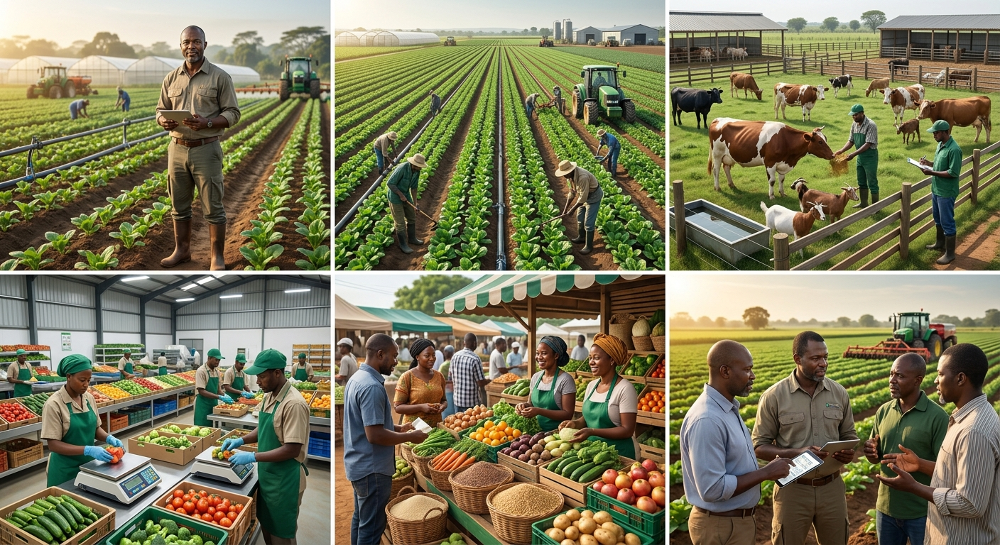

Agricultural Training
Practical training that equips farmers and entrepreneurs with relevant agricultural knowledge and skills.
PFarm helps farmers, entrepreneurs, institutions and investors turn agricultural opportunities into viable and sustainable enterprises.

PFarm is an African agricultural enterprise development company committed to building profitable, resilient and sustainable agricultural businesses.
We operate at the intersection of agriculture, business, technology and rural economic development.
Discover What We Do →We provide integrated solutions that help agricultural ideas grow into sustainable businesses.
Practical training that equips farmers and entrepreneurs with relevant agricultural knowledge and skills.
Supporting agricultural businesses from opportunity identification to enterprise development.
Helping individuals and organizations establish productive and sustainable agricultural operations.
Applying technology and modern systems to improve agricultural productivity and efficiency.
Supporting the transformation of agricultural products into higher-value products.
Connecting agricultural businesses and producers with relevant markets and opportunities.
We approach agriculture as an enterprise with sustainable business models at the centre.
We explore modern technologies and smart agricultural systems to improve productivity.
We contribute to stronger agricultural communities and rural economic development.
Let's explore opportunities to build productive and sustainable agricultural businesses.